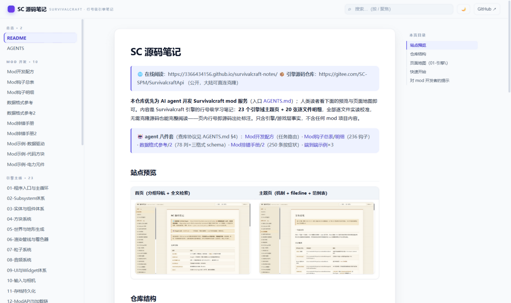
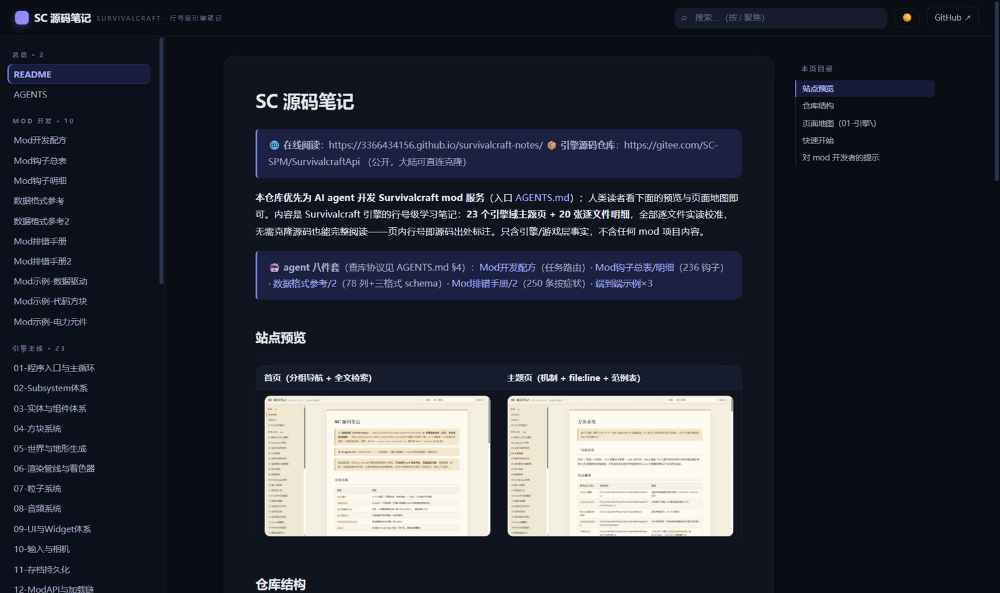
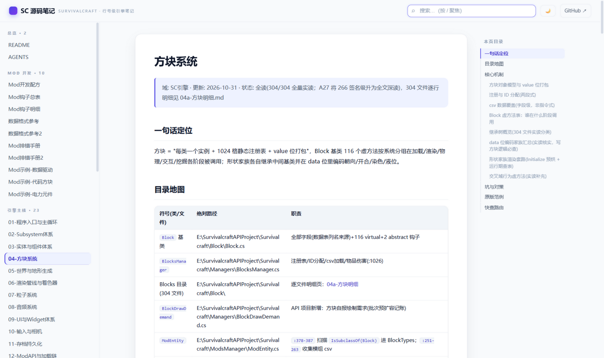

SC 源码笔记
🌐 在线阅读：https://3366434156.github.io/survivalcraft-notes/ 📦 引擎源码仓库：https://gitee.com/SC-SPM/SurvivalcraftApi （公开，大陆可直连克隆）
本仓库优先为 AI agent 开发 Survivalcraft mod 服务（入口 AGENTS.md）；人类读者看下面的预览与页面地图即可。内容是 Survivalcraft 引擎的行号级学习笔记：23 个引擎域主题页 + 20 张逐文件明细，全部逐文件实读校准，无需克隆源码也能完整阅读——页内行号即源码出处标注。只含引擎/游戏层事实，不含任何 mod 项目内容。
🤖 agent 十件套（查库协议见 AGENTS.md §4）：Mod开发配方（高频 30 条）/配方2（全量 235 条·15 大类）· Mod钩子总表/明细（236 钩子）· 数据格式参考/2/3（方块 78 列+配方实体+界面 XML/语言包/动画 JSON）· Mod排错手册/2（250 条按症状）· 端到端示例×7（数据驱动/代码方块/电力元件/自定义生物/自定义界面/自定义特效/自定义食物）· 24-机制全链（跨域挂点定位）
站点预览
| 首页（亮色） | 首页（暗色，自动跟随系统 + 一键切换） | 主题页（右侧可跳转目录） |
|---|---|---|
 |  |  |
仓库结构
| 位置 | 内容 |
|---|---|
AGENTS.md | agent 入口：引擎心智模型 + 查库协议（挂全部 10 份 agent 参考） |
学习路线.md | 人类入口：三条上手路径（做 mod / 读引擎 / 查问题）+ 20 词概念词典 |
Mod开发配方.md+Mod开发配方2.md、Mod钩子总表/明细.md、数据格式参考/2/3.md、Mod排错手册/2.md、Mod示例-*.md | agent 十件套：任务路由（精选+全量 235 条）/ 236 钩子编目 / 数据格式 schema（方块·配方实体·界面语言动画）/ 250 条排错 / 7 个端到端示例 |
01-引擎\ | 23 个主题页（引擎各域，全部全读）+ 明细\ 20 张逐文件档案 |
media\ | 站点预览截图 |
tools\ | build_wiki.py 站点生成器 · coverage_audit.py 源码↔笔记覆盖对账 |
docs\ | 生成的 GitHub Pages 站点（重生成即覆盖） |
页面地图（01-引擎\）
| 页 | 覆盖 | 全读(N/M) · 明细 |
|---|---|---|
| 01-程序入口与主循环 | Program/Window/ScreensManager/GameScreen 一帧全序 | — |
| 02-Subsystem体系 | Subsystem/Project/加载保存/更新驱动 + 40 业务子系统 | 111/111 · 02a |
| 03-实体与组件体系 | Entity/Component 契约 + 91 组件族 + EntitySystem | 91/91 · 03a |
| 04-方块系统 | Block 116 虚方法/BlocksManager/304 方块 | 304/304 · 04a |
| 05-世界与地形生成 | 区块十态/五代TCG/TS23持久化 | 全读 · 05a |
| 06-渲染管线与着色器 | Graphics/语义头/预乘alpha/批次 | 71/71 · 06a |
| 07-粒子系统 | ParticleSystem 基类与新增 5 步 | 28/28 · 07a |
| 08-音频系统 | OpenAL/播放链/格式嗅探/游戏层播放全链 | 引擎+游戏层 · 08a |
| 09-UI与Widget体系 | 布局/命中/Update必调base/XML解析 | 106/106 · 09a |
| 10-输入与相机 | 输入分发/键位/相机类族/VR手势 | 19+13+消费侧 · 10a |
| 11-存档持久化 | 存档 6+9 步/ValuesDictionary 硬拆箱 | 88/88 · 11a |
| 12-ModAPI与加载链 | modinfo 13键/加载 20 步/HarmonyX | 72/72 · 12a |
| 13-物理与碰撞 | ComponentBody 全链/碰撞对O(n²)/弹道/爆炸 | 全读 |
| 14-光照天空与天气 | 光照0-15/昼夜曲线/天气状态机 | 全读 |
| 15-电学与机构 | 电路 tick 链/自定义元件 4 步/51元件+12机构 | 51/51 · 15a |
| 16-玩法物品与背包 | Game\ 玩法层：玩家/库存/合成/掉落/世界设置 | 298 文件 · 16a/16b |
| 17-Screen屏幕族 | 71 屏幕组织与切换协议 | 71/71 · 17a |
| 18-Dialog对话框族 | 57 对话框 10 家族 | 57/57 · 18a |
| 19-媒体动画与VR | Engine.Media/Animation/VR(含 OpenXR 全链) | 140/140 · 19a |
| 20-内容与资源管理 | ContentManager/scmod/导入链 | 全读 · 20a |
| 21-Engine核心运行时 | Engine\Engine\ 平台层：窗口循环/日志/调度/墙钟 | 41/41 · 21a |
| 22-数据资产与Database | Content/Assets 数据资产(Database.xml/配方/衣物/UI XML) | 全读 · 22a |
| 23-内嵌浏览器 | WASM/Emscripten 平台后端：双缓冲输入/共享内存 Content.zip/GL 委托锚 | 13/13 |
| 24-机制全链 | 跨域六链逐步串联（挖方块/放置/实体帧/生物一生/电路步/加载保存）×mod 挂点 | 衔接步 2026-11-01 实读 |
快速开始
- 选路线：先看 学习路线——做 mod / 读引擎 / 查问题三条路径 + 概念词典。
- 读：页面地图选页 → 页内"快查路由"直达小节；站点内按
/搜索。 - 写 mod：先看 Mod开发配方（任务 → 照抄哪里），配合 AGENTS.md 的引擎心智模型；端到端样例抄 Mod示例。
- 对照源码：克隆上方 Gitee 仓库到本机，页内"目录地图"的绝对路径+实读行号可直接
file:line跳转核对；页面没覆盖的可以 Grep 源码并把发现回写进对应页面（库越用越准）。
对 mod 开发者的提示
- 页首状态行的"全读(N/M)"= 该目录源码文件实读覆盖数。
- mod 挂点（UpdateComponentBody、OnLightningStrike、GenerateChunkLightSources 等）在各页"原版范例/快查路由"中有引擎侧位置；实际用法案例不在本库收录范围。